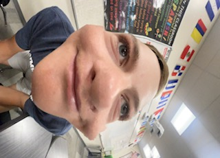

My name is Taylor Jacobsen, I am 15 years old. I have been born an raised in St. George, Utah. I go to Crimson Cliffs High School and I play golf. I have a Mom and Dad and then a younger sister and a younger brother.
I have lived in St.George my entire life and so have my parents. I have 2 younger siblings and younger sister who is 12 and her name is Mia, I have a younger brother who is 8 and his name is Chase. I am 15 years of age and have played many different different sports but have really stuck to golf and soccer has those have been my favorite sports to play. I had played soccer my entire life up and started to golf just a few years ago. I have many goals to play pro sports and get into Notre Dame.
